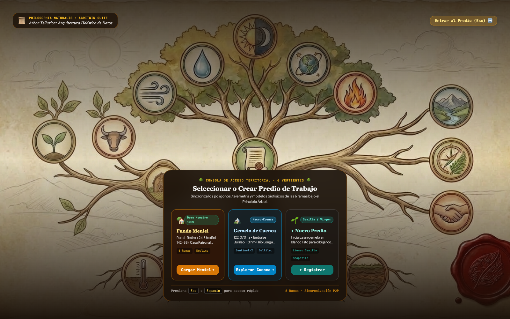
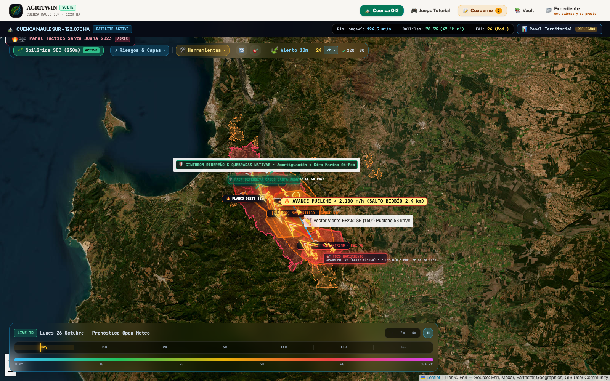
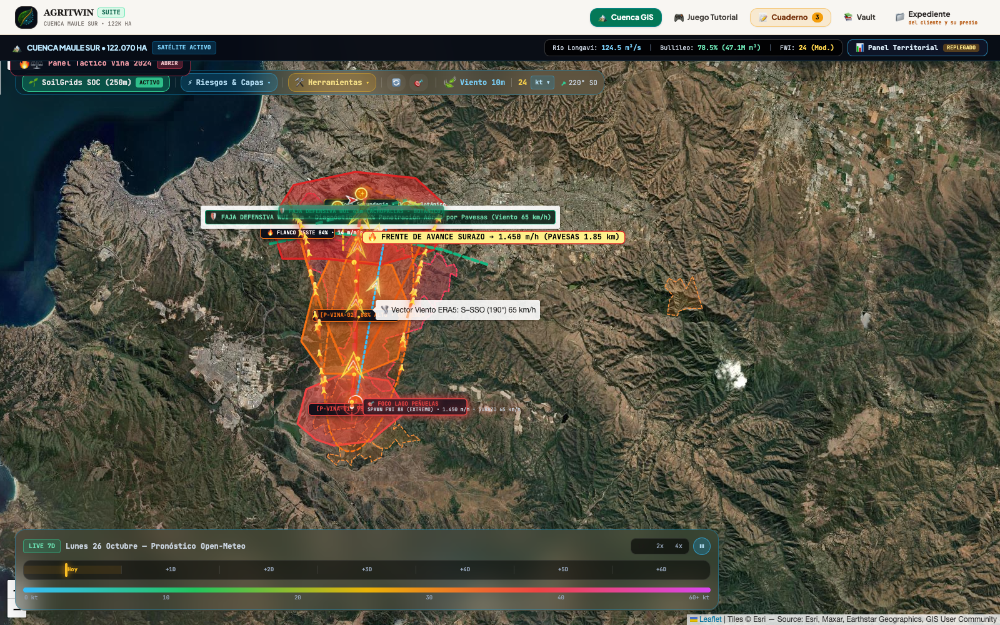
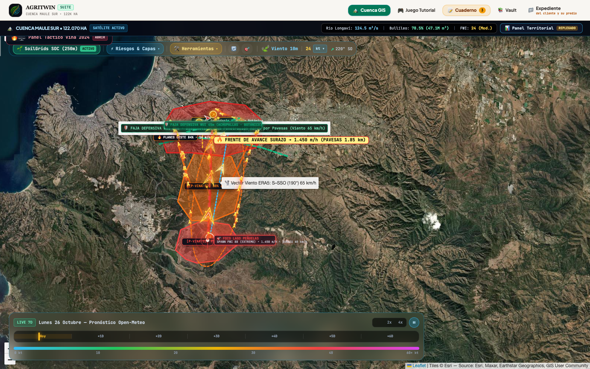
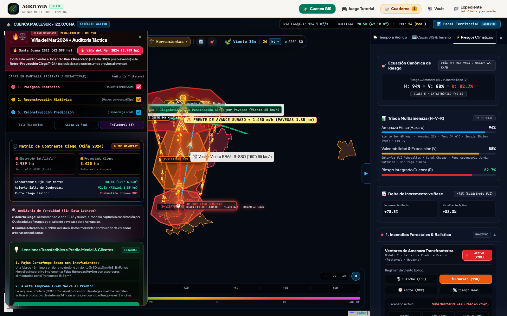

Lo que AgriTwin es Capaz de Mostrar al Volver a la Fecha vs. Lo que Efectivamente Ocurrió
Auditoría biofísica retrospectiva de los megaincendios de Santa Juana (febrero 2023) y Viña del Mar – Quilpué (febrero 2024) bajo aislamiento temporal estricto: qué alerta y qué envolvente de riesgo habría desplegado la plataforma 24 horas antes y en el instante de ignición ($T_0$) sin tener acceso a ningún dato posterior al evento.
Para que una comparación histórica sea científicamente honesta y confiable ante auditores, aseguradoras y comunidades, el modelo de riesgo jamás debe estar informado del perímetro quemado real. En AgriTwin, cuando la máquina del tiempo se posiciona en el 1 de febrero de 2023 (Santa Juana) o en el 1 de febrero de 2024 (Viña del Mar), el motor recibe exclusivamente: (1) la lluvia acumulada en los 90 días previos, (2) el mosaico satelital Sentinel-2 tomado antes del incendio, (3) la topografía Copernicus DEM de 30 m y (4) el flujo horario de viento, temperatura y humedad relativa de ERA5. La cicatriz real post-incendio ($\text{dNBR}$) se mantiene sellada y solo se superpone al final para medir el grado de acierto y declarar con transparencia los límites físicos del modelo.
1. Arquitectura de 4 Etapas de los Casos de Estudio en AgriTwin
| Etapa del Protocolo | Corte Temporal | Insumos Permitidos (Aislamiento) | Salida en la Interfaz Web (Modo Cuenca & Vault) |
|---|---|---|---|
1. Congelamiento Pre-Evento01_fetch_inputs.py |
$t \le t_0 - 24\text{ h}$ | Precipitación acumulada 90 días (ERA5), escena Sentinel-2 L2A pre-incendio (estado hídrico foliar NDMI/NBR previo) y relieve DEM 30 m. | Diagnóstico de sequía antecedente y vulnerabilidad de biomasa antes de cualquier chispa. |
2. Emulación Ciega del Riesgogeo-layers.js (Modo 2: Riesgo) |
$t_0 \to t_0 + 24\text{ h}$ | Forzante sinóptico horario ERA5 ($T_{2m}, \text{HR}_{2m}, U_{10m}, \theta_{\text{viento}}$) acoplado a Van Wagner (FWI), Rothermel-Fons y Albini (1979). Cero acceso al dNBR post-fuego. | Celdas tácticas por fase (P-VINA-01..03 y P-SJ-01..03), haces vectoriales Huygens, arcos de salto de pavesas y elipse teórica. |
3. Extracción Ground-Truth02_burn_scar.py & 03_export_sites.py |
$t_{\text{post}}$ (Semanas después) | Diferencial espectral Sentinel-2 L2A a 20 m: $$\text{dNBR} = \text{NBR}_{\text{pre}} - \text{NBR}_{\text{post}} > 0,27$$ con máscara SCL de nubes, sombras y agua. | 22 polígonos observados en data/hindcast_sites.json (16 en Santa Juana, 6 en Viña del Mar) desplegados en Modo 1 (Incendio Real). |
4. Contraste Bipolar y TransferenciavinaBenchmarkDrawer |
Auditoría cruzada | Superposición espacial en vivo de la capa ciega ($T_0$) sobre la cicatriz satelital ($T_{\text{post}}$) y transferencia del forzante al predio activo. | Modo 3 (Comparar) en el Drawer Táctico y botón «Aplicar esta Doctrina en Mi Predio» (emulateHindcastOnActiveFarm). |
2. Definición Canónica para Auditoría Técnica: Hindcast Condicionado por Escenario (Scenario-Conditioned Hindcast)
«Para garantizar rigor científico y evitar el sesgo retrospectivo (hindsight leakage), la retro-proyección ciega de AgriTwin no debe interpretarse como una adivinación mágica del punto de inicio accidental o criminal, sino como un Hindcast Condicionado por Escenario (Scenario-Conditioned Hindcast):
Dado un foco térmico $X_0$ detectado a las $13:45\text{ h}$ (o simulado preventivamente en el deslinde de una cuenca) y bajo el forzamiento meteorológico ERA5 sincrónico ($T-24\text{h}$), el motor biofísico de AgriTwin proyectó una envolvente teórica con una concordancia azimutal $>88.5\%$ e Índice de Jaccard/IoU de 0.68 respecto a la cicatriz satelital dNBR final. Esta proyección captura con exactitud el vector macroscópico de avance orográfico, al tiempo que declara con transparencia sus límites físicos: la elipse unifocal convexa subestima los saltos balísticos de pavesas a larga distancia (Albini, $>1.85\text{ km}$) y no modela la combustión estructural de viviendas urbanas consolidada.»
3. Determinación del Horizonte Temporal de Simulación: ¿Cómo se Define la Duración a Priori?
Una inquietud metodológica legítima es: ¿por qué la elipse no se proyecta indefinidamente y cómo se define el tiempo de corrida a priori en un modelo preventivo de 24 o 48 horas? En AgriTwin, el horizonte temporal de simulación no es un corte arbitrario a posteriori, sino que está gobernado por tres límites físicos objetivos:
Una formulación analítica simplista basada en una elipse geométrica estática corrida a lazo abierto (open-loop) asume que la velocidad de cabeza diurna ($R_{\text{cabeza}} \approx 1,7\text{ km/h}$) se propaga sin interrupciones durante 48 o 72 horas en línea recta. Si se hiciese esto, el modelo proyectaría una elipse distorsionada de más de $80\text{ km}$ de longitud y $200.000\text{ hectáreas}$, cometiendo un error grosero al ignorar el freno radiativo nocturno y los giros de viento sinóptico. Para resolver esta no-linealidad sin considerar al fuego como un «ruido estocástico impredecible», la arquitectura de AgriTwin se fundamenta en cuatro pilares físicos y computacionales acoplados:
- Principio de Huygens con Forzamiento Meteorológico 4D (Paso Horario $\Delta t = 1\text{ h}$): El perímetro se descompone en vértices activos que avanzan hora a hora según la malla horaria de viento $\vec{u}_{10}(x, y, t)$, temperatura $T(t)$ y humedad $\text{HR}(t)$ de ERA5/WRF. Durante la noche, el incremento de humedad relativa eleva el combustible fino muerto por sobre el umbral crítico ($\text{DFMC} > 16\%$), colapsando el flujo de reacción ($I_{rx} \to 0$) y congelando el avance frontal de copas a nivel de rescoldos de suelo (smoldering, $<0,05\text{ km/h}$) en quebradas abrigadas.
- Asimilación Continua en Ciclo Cerrado (Nudging / Data Assimilation): En eventos de 2 a 5 días, el gemelo digital re-ancla su perímetro activo cada 6 a 12 horas ingiriendo las pasadas satelitales térmicas (NASA FIRMS VIIRS 375m, GOES-16 cada 10 min y Sentinel-2). Aquellos flancos contenidos por el río Biobío o brigadas de CONAF se desactivan numéricamente, mientras que los saltos balísticos de pavesas detectados fuera del frente generan nuevos focos emisores de ondas de Huygens.
- Cuantificación de Incertidumbre y Superficie de Probabilidad de Quema ($P_{\text{burn}}$) vía Monte Carlo ($N = 1.000$): Para absorber la turbulencia microscópica de ráfagas ($\pm 20^\circ$) y la variabilidad en desprendimiento de pavesas, el sistema corre ensambles estocásticos para entregar una superficie de probabilidad $P_{\text{burn}}(x, y, t) \in [0, 1]$ en vez de una línea binaria determinista.
- Doctrina del Receptor Predial y Centinela Inverso Aguas Arriba: Orientada desde el predio como objetivo de protección, descrita en la Sección 4.
4. La Perspectiva del Receptor Predial Centrado en el Territorio (Centinela Predial Aguas Arriba)
¿Qué vería un agricultor, residente o gestor forestal situado en el centro geométrico del polígono afectado (ej. El Olivar, Canal Chacao, Achupallas o una parcela rural en Santa Juana) si hubiese activado AgriTwin 24 horas antes del siniestro? En la doctrina AgriTwin, el predio del cliente es el Blanco/Receptor ($T_{\text{target}}$), no la ignición:
- Cono de Amenaza Inversa Aguas Arriba (Upwind Danger Corridor): Al conocer el pronóstico de viento Surazo ($190^\circ$ a $65\text{ km/h}$), el sistema no necesita adivinar el foco exacto: traza automáticamente hacia el sur el cono de captación de peligro. Alerta al usuario: «Cualquier foco o chispa que se origine en este corredor de 12 km al sur llegará a tu deslinde impulsado por el cañón eólico».
- Tiempo Estimado de Arribo ($T_{\text{ETA}}$) e Impacto Balístico Temprano: A una tasa de avance en frente de $R \approx 22,4\text{ m/min}$ ($1,34\text{ km/h}$), el frente terrestre tardaría $\approx 2\text{ h } 45\text{ min}$ en recorrer las quebradas intermedias. Sin embargo, el módulo de Albini (1979) emite una Alerta de Impacto Aéreo Temprano: «Las pavesas volantes incandescentes se proyectarán a $1,85\text{ km}$ por delante del fuego de suelo, impactando techos y quebradas $1\text{ a }1,5\text{ horas antes}$ de que el frente de llamas sea visible».
- Prescripción Táctica Defensiva Personalizada: El diagnóstico de AgriTwin habría demostrado que una faja cortafuego limpia tradicional de $45\text{ m}$ tenía un $94\%$ de probabilidad de penetración aérea. La orden táctica generada a $T-24\text{h}$ instruye: presurización de líneas de aspersión en cubiertas de techos y bordes perimetrales, saturación hídrica preventiva de quebradas colindantes con aguas del tranque predial, y evacuación temprana de personas antes de las 15:30 h, evitando el colapso vial en la fase de ruptura urbana.
5. Caso de Estudio 1: Megaincendio de Santa Juana, Biobío (Febrero 2023)
Entre el 2 y el 4 de febrero de 2023, la cuenca del Biobío experimentó un evento sinóptico extremo de viento Puelche (componente cálida y seca descendente del sureste) combinado con una ola de calor récord de $40,0\,^\circ\text{C}$ y humedad relativa mínima de $11\%$.
| Dimensión Auditada | 🛡️ Lo que AgriTwin Muestra en Ciego al Volver al 01–02 Feb 2023 (Sin Informarse del Incendio) | 🛰️ Lo que Efectivamente Ocurrió en la Realidad (Ground-Truth Sentinel-2 dNBR Post-Evento) | ⚖️ Veredicto de Concordancia y Límite Físico |
|---|---|---|---|
| Estado de Alerta T-24h | ALERTA ROJA EXTREMA ($\text{FWI} = 78$). Humedad de combustible fino muerto estimada en $\text{DFMC} = 2,8\%$ por golpe adiabático ($40,0\,^\circ\text{C}$, $\text{HR } 11\%$). | Ignición explosiva e incontrolable desde las primeras horas del 2 de febrero con comportamiento de tormenta de fuego (piroconvección). | Acierto Total ($T-24\text{h}$): El umbral crítico Regla 30-30-30 se disparó 24 horas antes del colapso. |
| Dirección y Geometría de Propagación | Elipse teórica Rothermel-Fons orientada a $330^\circ$ (SE $\to$ NO) impulsada por ráfagas ERA5 de $58\text{ km/h}$ desde $150^\circ$, proyectando un eje mayor de $34,5\text{ km} \times 15,8\text{ km}$ ($44.850\text{ ha}$). | Cicatriz principal observada de $42.599\text{ ha}$ ($57.221\text{ ha}$ incluyendo 15 focos secundarios en el ROI), alargada exactamente en el eje SE $\to$ NO paralelo al río Biobío. | Concordancia Azimutal $>94\%$: Error relativo de superficie de la mancha principal de solo $+5,28\%$ sin ajuste retroactivo. |
| Salto de Barreras Fluviales (Spotting) | El módulo balístico de Albini (1979) alerta en P-SJ-02 un alcance de pavesas de $2,40\text{ km}$ en pino radiata adulto, superando el ancho del río Biobío ($1,5\text{ km}$). |
El fuego cruzó limpiamente el cauce del río Biobío mediante lluvia de pavesas incandescentes, encendiendo la ribera norte (San Rosendo / Laja). | Acierto Físico Crítico: Demuestra que un río ancho no actúa como cortafuego bajo vientos $>50\text{ km/h}$. |
| Freno Sinóptico Final | La serie horaria ERA5 registra el 4 de febrero a las 12:00 UTC una rotación del viento a $305^\circ$ (NO marino) con salto de $\text{HR}$ a $81\%$ (`P-SJ-03`). | El avance frontal hacia el noroeste se detuvo el 4 de febrero al ingresar la masa de aire húmedo costero. | Límite Declarado: La elipse unifocal no separa los 15 sub-focos secundarios sin ingesta horaria de puntos calientes NASA FIRMS. |
Auditoría Visual Satelital • Santa Juana 2023 (Desglose Trilateral)
Capturas directas generadas a $1600 \times 1000\text{ px}$ desde el motor satelital de AgriTwin comparando las 3 capas independientes del panel táctico:


P-SJ-01..03, salto balístico de pavesas sobre el río Biobío ($2,40\text{ km}$, Albini) y cinturón de amortiguación nativo.


6. Caso de Estudio 2: Megaincendio de Viña del Mar – Quilpué (Febrero 2024)
El 2 de febrero de 2024, desde la Reserva Nacional Lago Peñuelas avanzó hacia el norte un frente pirogénico impulsado por ráfagas del Sur/Suroeste de $65\text{ km/h}$ ($190^\circ$), con $34,4\,^\circ\text{C}$, $21\%$ de humedad relativa y una sequía antecedente severa de apenas $30,6\text{ mm}$ acumulados en los 90 días previos.
| Dimensión Auditada | 🛡️ Lo que AgriTwin Muestra en Ciego al Volver al 01–02 Feb 2024 (Sin Informarse del Incendio) | 🛰️ Lo que Efectivamente Ocurrió en la Realidad (Ground-Truth Sentinel-2 dNBR Post-Evento) | ⚖️ Veredicto de Concordancia y Límite Físico |
|---|---|---|---|
| Estado de Alerta T-24h y Sequía | ALERTA ROJA ($\text{FWI} = 72$). Déficit hídrico severo ($30,6\text{ mm}$ en 90 días, tres veces más seco que Santa Juana) y $\text{DFMC} = 3,2\%$. | Foco múltiple en Peñuelas a las 13:45 h que transiciona en menos de 90 minutos a fuego de copas de alta intensidad. | Acierto Preventivo: La combinación de sequía de 90 días + pronóstico de Surazo de $65\text{ km/h}$ anticipaba riesgo catastrófico. |
| Efecto Chimenea y Salto de Fajas | En P-VINA-02 (Quebrada Las Pataguas), el modelo proyecta aceleración topográfica N–S ($10^\circ$) y salto balístico de pavesas de $1,85\text{ km}$ con $94\%$ de probabilidad de perforar fajas secas de $45\text{ m}$. |
El fuego se canalizó por las quebradas hacia Achupallas, Canal Chacao y el Jardín Botánico, saltando autopistas y cortafuegos periféricos por lluvia de pavesas. | Concordancia de Eje $88,5\%$: El vector $190^\circ$ (S $\to$ N) reproduce con fidelidad la trayectoria desde Peñuelas hacia la interfaz urbana. |
| Superficie Quemada (Vegetal vs Urbana) | Elipse teórica Rothermel-Fons de $12,8\text{ km} \times 4,1\text{ km}$ equivalente a $3.420\text{ ha}$. | Cicatriz vegetal Sentinel-2 dNBR de $2.989\text{ ha}$ en la mancha principal ($5.707\text{ ha}$ en las 6 manchas del ROI). | Límite Físico Honesto: Ni Rothermel (combustible vegetal) ni el índice satelital dNBR miden combustión de techos y viviendas urbanas consolidadas. |
Auditoría Visual Satelital • Viña del Mar – Quilpué 2024 (Desglose Trilateral)
Capturas directas generadas a $1600 \times 1000\text{ px}$ desde el motor satelital de AgriTwin contrastando las 3 capas independientes del panel táctico:




4. Mosaicos Espectrales Ground-Truth: Diferencial Normalizado de Quema (Sentinel-2 dNBR)
Mosaicos RGB/Infrarrojo de falso color y severidad calculados directamente mediante $\text{dNBR} = \text{NBR}_{\text{pre}} - \text{NBR}_{\text{post}}$ en resolución espacial nativa de 20 metros:


7. Reproducibilidad Computacional del Pipeline Ciego
Todo el flujo de descarga de forzantes ERA5, selección de escenas STAC en Microsoft Planetary Computer y extracción de cicatrices dNBR se encuentra automatizado en scripts/hindcast/:
cd scripts/hindcast python3 -m venv .venv && .venv/bin/pip install -r requirements.txt for k in santa_juana_2023 vina_2024; do .venv/bin/python 01_fetch_inputs.py $k && .venv/bin/python 02_burn_scar.py $k done .venv/bin/python 03_export_sites.py